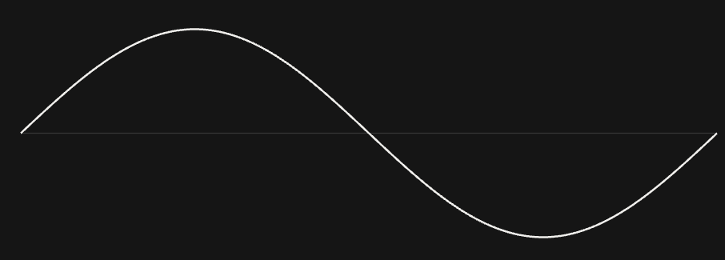
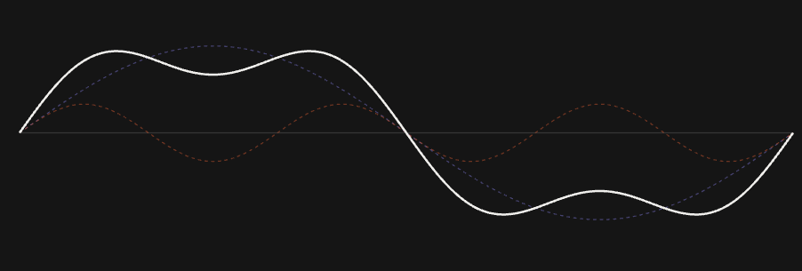
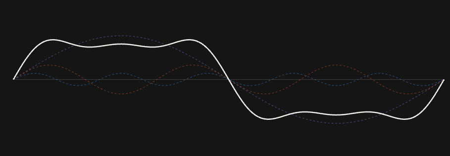

2. 方波構成與傅立葉分析 (Square Wave & Fourier Analysis)¶
核心觀念：傅立葉分析（Fourier Analysis）的本質，就是將任何看似複雜、扭曲的訊號，拆解成 \(n\) 個頻率不同、振幅不同的純淨正弦波（\(\sin\)）與餘弦波（\(\cos\)）之和。
直觀理解：音樂與和弦的聯想¶
在進入數學前，我們先用一個音樂的例子來建立直覺：
當鋼琴同時按下 Do - Mi - Sol 時，空氣中傳播的是一個由三個音疊加在一起的「複合聲波」（時域波形看起很複雜）。然而，人的耳朵與音樂家卻能輕易聽出： - 這個聲音由 261 Hz (Do)、329 Hz (Mi) 與 392 Hz (Sol) 三個純音組成。 - 其中哪一個音比較大聲（振幅較大）、哪一個比較小聲（振幅較小）。
graph LR
CHORD["鋼琴和弦波形<br>(時域複合訊號)"] --> FT["傅立葉分析<br>(拆解為單純頻率)"]
FT --> DO["261 Hz (Do 正弦波)"]
FT --> MI["329 Hz (Mi 正弦波)"]
FT --> SOL["392 Hz (Sol 正弦波)"]傅立葉分析在通訊中的角色正是如此：它就像一位調音師，能將傳輸線中任何複雜的電壓波形，精確拆解為「由哪些頻率的 \(\sin\) 與 \(\cos\) 組成、各自佔多大比例」。
數學通式：訊號的組成結構¶
任何週期為 \(T\) 的連續訊號 \(g(t)\)，都可以精確寫成一串正弦波與餘弦波的相加（稱為傅立葉級數 Fourier Series）：
展開來看：
參數解讀：¶
- 基頻 (Fundamental Frequency, \(f_0 = 1/T\))：決定波形重複週期的基本頻率。
- 諧波 (Harmonics, \(n \cdot f_0\))：頻率為基頻整數倍的成分（\(2f_0, 3f_0, \dots\)）。
- 係數 \(a_n, b_n\)：代表該頻率成分在訊號中所佔的振幅大小（強度）。如果某個頻率的係數為 0，代表訊號中完全沒有該頻率。
- \(\cos\) 與 \(\sin\) 的搭配：\(\sin\) 負責奇對稱波形，\(\cos\) 負責偶對稱波形，兩者疊加就能組合成任意相位的波形。
電腦的 0 與 1：方波是如何構成的？¶
在數位通訊中，傳遞 0 與 1 最常見的波形是具有直角跳變的「方波 (Square Wave)」：
電壓 (V)
^
| +-------+ +-------+
| | 1 | 0 | 1 | 0
0----+ +-------+ +-------+-----> 時間 (t)
對一個週期為 \(T\)（基頻 \(f_0 = 1/T\)）、振幅在 \(+A\) 與 \(-A\) 之間跳變的標準方波進行傅立葉展開，其公式為：
將各項展開：
方波的兩大特性：¶
- 僅包含奇數次諧波：只由基頻 \(f_0\) 以及 \(3f_0, 5f_0, 7f_0 \dots\) 組成，沒有偶數次諧波。
- 諧波振幅與次數成反比 (\(1/n\))：頻率越高，振幅越小（\(1, \frac{1}{3}, \frac{1}{5}, \frac{1}{7} \dots\)）。
視覺化：諧波如何一步步疊加出方波？¶
第 1 步：僅基頻 (\(n=1\))¶
- 合成式：\(\sin(2\pi f_0 t)\)
- 波形特徵：純粹平滑的正弦波，頂部圓潤、邊緣平緩。

第 2 步：加入 3 次諧波 (\(n=1, 3\))¶
- 合成式：\(\sin(2\pi f_0 t) + \frac{1}{3}\sin(6\pi f_0 t)\)
- 波形特徵：3 次諧波在波峰處反向抵消使頂部變平，兩側同向相加使邊緣開始變陡！

第 3 步：加入 5 次諧波 (\(n=1, 3, 5\))¶
- 合成式：\(\dots + \frac{1}{5}\sin(10\pi f_0 t)\)
- 波形特徵：頂部更加平整，上升與下降邊緣已非常接近垂直！

極限狀態：加入無限項奇數諧波 (\(n \to \infty\))¶
- 波形：邊緣完全垂直 90 度，頂部完全水平 ── 【理想數位方波】！
時域圖 vs 頻域圖：兩種分析視角¶
通訊工程中使用兩種座標圖來觀察訊號：
【時域圖 (Time Domain)】 【頻域圖 / 頻譜 (Frequency Domain)】
示波器看：電壓隨時間的「波形」 頻譜儀看：組成訊號的「頻率分量與振幅」
電壓 (V) 振幅 (A)
^ ^
| +----+ +----+ | 1.0 (基頻)
| | | | | | |
| | | | | | | 0.33 (3次諧波)
0----+ +-----+ +---> 時間 (t) | | | 0.2 (5次) 0.14 (7次)
+--+-----+----+----+-----> 頻率 (Hz)
f0 3f0 5f0 7f0
- 時域圖 (Time Domain)：橫軸是時間 (\(t\))，縱軸是瞬時電壓。表示訊號在某一時間點的實際強度。
- 頻域圖 / 頻譜 (Frequency Domain Spectrum)：橫軸是頻率 (\(f\))，縱軸是各頻率成分的振幅大小。表示訊號是由哪些頻率成分以何種比例疊加而成。
頻率與振幅的本質關係：為什麼邊緣越陡，高頻越多？¶
這是實體層通訊最重要的物理定律：
- 低頻成分（如基頻 \(f_0\)）：決定訊號的主體輪廓與主要能量（佔總能量 90% 以上）。
- 高頻成分（如 \(3f_0, 5f_0, 7f_0 \dots\)）：決定訊號直角邊緣的陡峭程度與跳變精確度。
- 失真 (Distortion)：如果實體線路無法通過高頻成分（高頻衰減），接收端收到的方波邊緣就會塌陷、變圓，若失真過大會導致接收端無法正確判讀 0 與 1。
❓ 初學者常見疑問與思維誤區 (Q&A)¶
Q1: 為什麼一定要用 \(\sin\) 與 \(\cos\) 當作分解基礎？
解答： 因為正弦訊號是線性傳輸系統的特性響應訊號： - 當一個純正弦波通過電纜、濾波器或空氣時，輸出的訊號永遠維持原本的正弦波形，只會發生振幅衰減或時間延遲。 - 如果用其他波形（如三角波）當基礎，訊號通過線路後形狀會完全失真，無法進行分析。
Q2: 傅立葉級數 (Fourier Series) 與 傅立葉轉換 (Fourier Transform) 的差別是什麼？
解答：
- 傅立葉級數 (Fourier Series)：用於分析週期性訊號（如不斷重複的 101010 測試波形），其頻譜是由一根根離散的頻率柱狀線（\(f_0, 3f_0, 5f_0\)）組成。
- 傅立葉轉換 (Fourier Transform)：用於分析非週期性訊號（如真實傳輸中隨機排列的位元流），其頻譜是一條連續的頻率曲線。
下一步¶
現在我們知道數位方波需要多個高頻諧波才能完整傳送。那麼，真實的電線到底能讓多大範圍的頻率通過？傳輸速率的極限在哪裡？
請前往下一節：3. 頻寬、有效頻寬與傳輸極限。